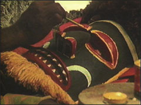

Malagan Art of New Ireland

Location: Pacific Islands Gallery, 2nd Floor (201).
In the South Pacific in Papua New Guinea, the New Irelanders honor their
ancestors by staging elaborate rituals known as Malagans. This 18-minute
film documents a contemporary Malagan in vivid detail.
Runs continuously.